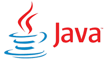
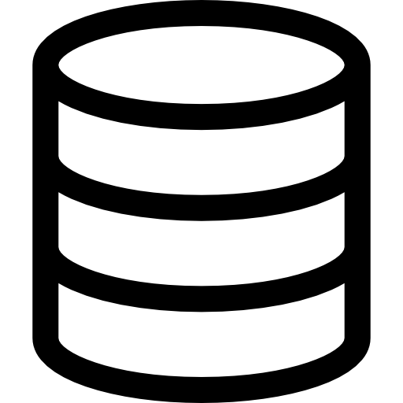
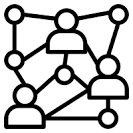

Courses
-
CST8118
Computer Essentials

Students explain computer hardware, and use operating system software to maintain, utilize, and secure a computer. Students practice the use of spreadsheet software to solve problems, use formulas, and visualize data with charts. Students discuss computer hardware and software with regards to financial and environmental sustainability. Theory is reinforced with application by means of practical laboratory assessments, including using virtualization software to install guest operating systems onto a host computer.
-
CST8215
Introduction to Database

Students learn the fundamentals of relational databases design using Entity Relation Diagrams (ERDs), and use Structured Query Language (SQL) to create, modify and query a database. Students design and create databases that are maintainable, secure and adaptable to change in business requirements, using normalization. Students become familiar with the functions of a Database Management System (DBMS) and its components in comparison with legacy systems and alternative information storage mechanisms.
-
CST8300
Achieving Success in Changing Environments

Students explore the possibilities ahead, assess their own aptitudes and strengths, and apply critical thinking and decision-making tools to help resolve some of the important issues in our complex society with its competing interests.
-
CST8116
Introduction to Computer Programming
Ldevelop introductory knowledge of computer programming with emphasis on problem analysis and design, using algorithms, pseudocode, flowcharts, UML Class Diagrams and testing, with the Java programming language used as a means to implement problem solution designs. Through an introduction to the Java programming language students use sequential structures, selection structures, repetition structures, variables, constants, methods, constructors, one-dimensional arrays, object-oriented programming, classes, objects, abstraction, encapsulation, inputs, outputs, coding conventions and documentation. Theory is reinforced with application by means of practical laboratory assessments.
-
MAT8001C
Technical Mathematics for Computer Science
Students manipulate algebraic expressions, solve algebraic equations and linear systems and learn the properties of and graph algebraic and transcendental functions. Students investigate computer number systems in addition to Boolean algebra and logic to help solve problems involving computer systems. Students also study the addition and subtraction of vectors using vector components. Delivered in a modular format, this course is equivalent to the completion of all of the following math modules MAT8100 - A, B, C, D, E, F, and L.
-
ENL1813T
Communications I
Students focus on meeting the requirements of effective communication. Through a combination of lectures, exercises, and independent learning, students practise writing, speaking, reading, listening, locating and documenting information and using technology to communicate professionally. Students develop and strengthen communication skills that contribute to success in both educational and workplace environments.
-
CST2355
Database Systems
Students acquire practical experience using market-leading object-relational database management systems like Oracle and MySQL. Students obtain hands-on experience with advanced engineering modeling tools along with SQL, SQL scripts and programming with Oracle's PL/SQL blocks. Database concepts covered include advanced SQL, case structures, rollup and cube operations, metadata manipulation, data storage and retrieval, security and transaction control and data warehousing.
-
CST8102
Operating System Fundamentals (GNU/Linux)
Students explore the basic concepts and components of Operating Systems (OS), and how they function and interact with hardware and software components. Students examine the details of operating system structures, process management, storage management, installation, configuration, and administration both in theory and through practical assignments based on the GNU/Linux operating system. Lab work is designed to implement the theory by developing skills using the powerful GNU/Linux command-line tools and utilities.
-
CST8284
Object Oriented Programming (Java)
Students explore object-oriented programming methodology using the Java programming language. Object oriented concepts, such as encapsulation, inheritance, abstraction and polymorphism are covered and reinforced with practical applications. Students explore the basics of data structures and algorithms as well as basic Graphical User Interface (GUI) programming.
-
CST8285
Web Programming
Students develop basic skills of web programming, website design and implementation. JavaScript, HTML5, and PHP are used to explore web-based solutions to problems of increasing interactivity and complexity. Lectures are reinforced by practical assignments that encourage students to construct and maintain their own websites.
-
ENL2019T
Technical Communication for Engineering Technologies
Students are exposed to exercises and assignments designed to foster independent and collaborative critical thinking, research, writing, visual communication and presentation skills related to technical topics.
-
GEP1001
Cooperative Education and Job Readiness
Students are guided through a series of activities that prepare them to conduct a professional job search and succeed in the workplace.